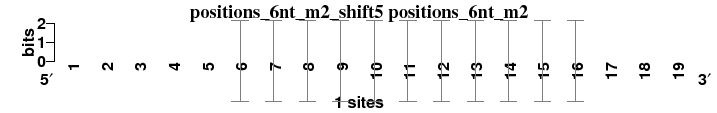
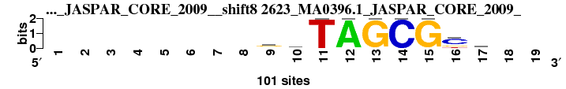
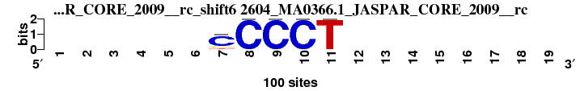
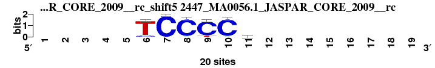
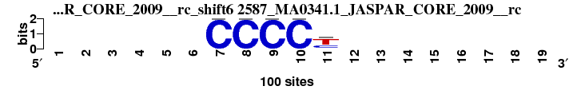
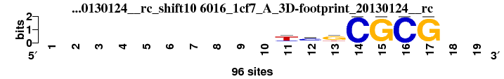
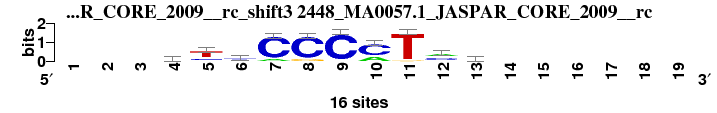
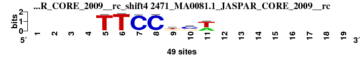

| Matrix name | Aligned logos | cor |
Ncor |
logoDP |
NIcor |
NsEucl |
SSD |
NSW |
rcor |
rNcor |
rlogoDP |
rNIcor |
rNsEucl |
rSSD |
rNSW |
rank_mean |
match_rank |
Aligned matrices |
|---|
| positions_6nt_m2_shift5 (positions_6nt_m2) |
 |
|
|
|
|
|
|
|
|
|
|
|
|
|
|
|
|
; positions_6nt_m2; m=0 (reference); ncol1=11; shift=5; ncol=19; -----TCCCCTAGCGC---
; Alignment reference
a 0 0 0 0 0 0 0 0 0 0 0 1 0 0 0 0 0 0 0
c 0 0 0 0 0 0 1 1 1 1 0 0 0 1 0 1 0 0 0
g 0 0 0 0 0 0 0 0 0 0 0 0 1 0 1 0 0 0 0
t 0 0 0 0 0 1 0 0 0 0 1 0 0 0 0 0 0 0 0
|
| 2623_MA0396.1_JASPAR_CORE_2009__shift8 (2623_MA0396.1_JASPAR_CORE_2009_) |
 |
0.837 |
0.558 |
10.099 |
0.542 |
0.882 |
1.797 |
0.888 |
7 |
2 |
4 |
2 |
7 |
9 |
7 |
5.429 |
1 |
; positions_6nt_m2 versus 2623_MA0396.1_JASPAR_CORE_2009_; m=1/16; ncol2=9; w=8; offset=3; strand=D; shift=8; score= 5.4286; --------rcTAGCGca--
; cor=0.837; Ncor=0.558; logoDP=10.099; NIcor=0.542; NsEucl=0.882; SSD=1.797; NSW=0.888; rcor=7; rNcor=2; rlogoDP=4; rNIcor=2; rNsEucl=7; rSSD=9; rNSW=7; rank_mean=5.429; match_rank=1
a 0 0 0 0 0 0 0 0 25 18 0 100 0 0 0 0 45 0 0
c 0 0 0 0 0 0 0 0 9 42 0 0 0 100 0 64 17 0 0
g 0 0 0 0 0 0 0 0 48 21 0 0 100 0 100 18 19 0 0
t 0 0 0 0 0 0 0 0 18 19 100 0 0 0 0 18 20 0 0
|
| 3076_HipB_RegulonDB_7.5__shift3 (3076_HipB_RegulonDB_7.5_) |
 |
0.850 |
0.492 |
11.098 |
0.472 |
0.901 |
2.375 |
0.892 |
6 |
5 |
1 |
5 |
5 |
13 |
6 |
5.857 |
2 |
; positions_6nt_m2 versus 3076_HipB_RegulonDB_7.5_; m=2/16; ncol2=19; w=11; offset=-2; strand=D; shift=3; score= 5.8571; ---TATCCbbKWdhGMGGA
; cor=0.850; Ncor=0.492; logoDP=11.098; NIcor=0.472; NsEucl=0.901; SSD=2.375; NSW=0.892; rcor=6; rNcor=5; rlogoDP=1; rNIcor=5; rNsEucl=5; rSSD=13; rNSW=6; rank_mean=5.857; match_rank=2
a 0 0 0 0 4 0 0 0 0 0 0 3 1 2 0 1 0 0 4
c 0 0 0 0 0 0 4 4 2 2 0 0 0 1 0 3 0 0 0
g 0 0 0 0 0 0 0 0 1 1 1 0 2 0 4 0 4 4 0
t 0 0 0 4 0 4 0 0 1 1 3 1 1 1 0 0 0 0 0
|
| 2588_MA0342.1_JASPAR_CORE_2009__rc_shift6 (2588_MA0342.1_JASPAR_CORE_2009__rc) |
 |
0.994 |
0.452 |
0.018 |
-0.150 |
0.968 |
0.052 |
0.995 |
1 |
9 |
15 |
14 |
1 |
1 |
1 |
6.000 |
3 |
; positions_6nt_m2 versus 2588_MA0342.1_JASPAR_CORE_2009__rc; m=3/16; ncol2=5; w=5; offset=1; strand=R; shift=6; score= 6; ------CCCCT--------
; cor=0.994; Ncor=0.452; logoDP=0.018; NIcor=-0.150; NsEucl=0.968; SSD=0.052; NSW=0.995; rcor=1; rNcor=9; rlogoDP=15; rNIcor=14; rNsEucl=1; rSSD=1; rNSW=1; rank_mean=6.000; match_rank=3
a 0 0 0 0 0 0 1 0 0 0 0 0 0 0 0 0 0 0 0
c 0 0 0 0 0 0 99 99 99 99 16 0 0 0 0 0 0 0 0
g 0 0 0 0 0 0 0 0 0 0 0 0 0 0 0 0 0 0 0
t 0 0 0 0 0 0 0 0 0 0 83 0 0 0 0 0 0 0 0
|
| 2604_MA0366.1_JASPAR_CORE_2009__rc_shift6 (2604_MA0366.1_JASPAR_CORE_2009__rc) |
 |
0.990 |
0.450 |
0.000 |
-0.143 |
0.960 |
0.079 |
0.992 |
2 |
10 |
16 |
13 |
2 |
2 |
2 |
6.714 |
4 |
; positions_6nt_m2 versus 2604_MA0366.1_JASPAR_CORE_2009__rc; m=4/16; ncol2=5; w=5; offset=1; strand=R; shift=6; score= 6.7143; ------CCCCT--------
; cor=0.990; Ncor=0.450; logoDP=0.000; NIcor=-0.143; NsEucl=0.960; SSD=0.079; NSW=0.992; rcor=2; rNcor=10; rlogoDP=16; rNIcor=13; rNsEucl=2; rSSD=2; rNSW=2; rank_mean=6.714; match_rank=4
a 0 0 0 0 0 0 0 0 0 0 0 0 0 0 0 0 0 0 0
c 0 0 0 0 0 0 77 100 100 100 0 0 0 0 0 0 0 0 0
g 0 0 0 0 0 0 12 0 0 0 0 0 0 0 0 0 0 0 0
t 0 0 0 0 0 0 11 0 0 0 100 0 0 0 0 0 0 0 0
|
| 5966_1a3q_A_3D-footprint_20130124__rc_shift4 (5966_1a3q_A_3D-footprint_20130124__rc) |
 |
0.967 |
0.403 |
0.084 |
-0.125 |
0.928 |
0.256 |
0.974 |
3 |
15 |
12 |
9 |
3 |
3 |
3 |
6.857 |
5 |
; positions_6nt_m2 versus 5966_1a3q_A_3D-footprint_20130124__rc; m=5/16; ncol2=6; w=5; offset=-1; strand=R; shift=4; score= 6.8571; ----ttCCCC---------
; cor=0.967; Ncor=0.403; logoDP=0.084; NIcor=-0.125; NsEucl=0.928; SSD=0.256; NSW=0.974; rcor=3; rNcor=15; rlogoDP=12; rNIcor=9; rNsEucl=3; rSSD=3; rNSW=3; rank_mean=6.857; match_rank=5
a 0 0 0 0 16 16 0 0 0 0 0 0 0 0 0 0 0 0 0
c 0 0 0 0 13 13 96 96 96 96 0 0 0 0 0 0 0 0 0
g 0 0 0 0 13 13 0 0 0 0 0 0 0 0 0 0 0 0 0
t 0 0 0 0 54 54 0 0 0 0 0 0 0 0 0 0 0 0 0
|
| 2624_MA0397.1_JASPAR_CORE_2009__shift8 (2624_MA0397.1_JASPAR_CORE_2009_) |
 |
0.816 |
0.544 |
10.327 |
0.529 |
0.875 |
2.012 |
0.874 |
10 |
4 |
2 |
4 |
10 |
10 |
9 |
7.000 |
6 |
; positions_6nt_m2 versus 2624_MA0397.1_JASPAR_CORE_2009_; m=6/16; ncol2=9; w=8; offset=3; strand=D; shift=8; score= 7; --------gmTAGCGCa--
; cor=0.816; Ncor=0.544; logoDP=10.327; NIcor=0.529; NsEucl=0.875; SSD=2.012; NSW=0.874; rcor=10; rNcor=4; rlogoDP=2; rNIcor=4; rNsEucl=10; rSSD=10; rNSW=9; rank_mean=7.000; match_rank=6
a 0 0 0 0 0 0 0 0 19 40 0 100 0 0 0 0 54 0 0
c 0 0 0 0 0 0 0 0 11 28 0 0 0 100 0 73 15 0 0
g 0 0 0 0 0 0 0 0 56 24 0 0 100 0 100 17 16 0 0
t 0 0 0 0 0 0 0 0 15 7 100 0 0 0 0 10 15 0 0
|
| 2447_MA0056.1_JASPAR_CORE_2009__rc_shift5 (2447_MA0056.1_JASPAR_CORE_2009__rc) |
 |
0.878 |
0.479 |
0.037 |
-0.132 |
0.880 |
1.035 |
0.914 |
5 |
6 |
14 |
11 |
8 |
5 |
5 |
7.714 |
7 |
; positions_6nt_m2 versus 2447_MA0056.1_JASPAR_CORE_2009__rc; m=7/16; ncol2=6; w=6; offset=0; strand=R; shift=5; score= 7.7143; -----TCCCCr--------
; cor=0.878; Ncor=0.479; logoDP=0.037; NIcor=-0.132; NsEucl=0.880; SSD=1.035; NSW=0.914; rcor=5; rNcor=6; rlogoDP=14; rNIcor=11; rNsEucl=8; rSSD=5; rNSW=5; rank_mean=7.714; match_rank=7
a 0 0 0 0 0 0 0 1 0 1 8 0 0 0 0 0 0 0 0
c 0 0 0 0 0 2 20 19 18 19 4 0 0 0 0 0 0 0 0
g 0 0 0 0 0 0 0 0 0 0 5 0 0 0 0 0 0 0 0
t 0 0 0 0 0 18 0 0 2 0 3 0 0 0 0 0 0 0 0
|
| 2587_MA0341.1_JASPAR_CORE_2009__rc_shift6 (2587_MA0341.1_JASPAR_CORE_2009__rc) |
 |
0.965 |
0.439 |
0.052 |
-0.152 |
0.927 |
0.265 |
0.974 |
4 |
12 |
13 |
15 |
4 |
4 |
4 |
8.000 |
8 |
; positions_6nt_m2 versus 2587_MA0341.1_JASPAR_CORE_2009__rc; m=8/16; ncol2=5; w=5; offset=1; strand=R; shift=6; score= 8; ------CCCCy--------
; cor=0.965; Ncor=0.439; logoDP=0.052; NIcor=-0.152; NsEucl=0.927; SSD=0.265; NSW=0.974; rcor=4; rNcor=12; rlogoDP=13; rNIcor=15; rNsEucl=4; rSSD=4; rNSW=4; rank_mean=8.000; match_rank=8
a 0 0 0 0 0 0 0 0 0 0 0 0 0 0 0 0 0 0 0
c 0 0 0 0 0 0 100 100 100 100 32 0 0 0 0 0 0 0 0
g 0 0 0 0 0 0 0 0 0 0 7 0 0 0 0 0 0 0 0
t 0 0 0 0 0 0 0 0 0 0 60 0 0 0 0 0 0 0 0
|
| 5080_Mta_DBTBS_1.0__shift0 (5080_Mta_DBTBS_1.0_) |
 |
0.818 |
0.460 |
8.656 |
0.449 |
0.882 |
2.264 |
0.874 |
9 |
8 |
6 |
6 |
6 |
12 |
10 |
8.143 |
9 |
; positions_6nt_m2 versus 5080_Mta_DBTBS_1.0_; m=9/16; ncol2=14; w=9; offset=-5; strand=D; shift=0; score= 8.1429; GACyCTmCssTWGs-----
; cor=0.818; Ncor=0.460; logoDP=8.656; NIcor=0.449; NsEucl=0.882; SSD=2.264; NSW=0.874; rcor=9; rNcor=8; rlogoDP=6; rNIcor=6; rNsEucl=6; rSSD=12; rNSW=10; rank_mean=8.143; match_rank=9
a 0 1 0 0 0.21 0 0.53 0.21 0 0 0 0.69 0.21 0 0 0 0 0 0
c 0 0 1 0.47 0.79 0 0.47 0.79 0.66 0.34 0 0 0 0.66 0 0 0 0 0
g 1 0 0 0 0 0 0 0 0.34 0.66 0 0 0.79 0.34 0 0 0 0 0
t 0 0 0 0.53 0 1 0 0 0 0 1 0.31 0 0 0 0 0 0 0
|
| 7264_STY1_ArabidopsisPBM_20140210__shift6 (7264_STY1_ArabidopsisPBM_20140210_) |
 |
0.773 |
0.702 |
9.744 |
0.689 |
0.877 |
3.036 |
0.848 |
13 |
1 |
5 |
1 |
9 |
16 |
13 |
8.286 |
10 |
; positions_6nt_m2 versus 7264_STY1_ArabidopsisPBM_20140210_; m=10/16; ncol2=10; w=10; offset=1; strand=D; shift=6; score= 8.2857; ------cCCCTAGGGy---
; cor=0.773; Ncor=0.702; logoDP=9.744; NIcor=0.689; NsEucl=0.877; SSD=3.036; NSW=0.848; rcor=13; rNcor=1; rlogoDP=5; rNIcor=1; rNsEucl=9; rSSD=16; rNSW=13; rank_mean=8.286; match_rank=10
a 0 0 0 0 0 0 17 6 5 1 1 97 1 3 2 10 0 0 0
c 0 0 0 0 0 0 45 87 91 95 1 1 3 1 6 27 0 0 0
g 0 0 0 0 0 0 19 5 1 3 1 1 95 91 87 24 0 0 0
t 0 0 0 0 0 0 19 2 3 1 97 1 1 5 5 39 0 0 0
|
| 2609_MA0372.1_JASPAR_CORE_2009__shift5 (2609_MA0372.1_JASPAR_CORE_2009_) |
 |
0.757 |
0.551 |
10.156 |
0.538 |
0.857 |
2.618 |
0.836 |
15 |
3 |
3 |
3 |
13 |
15 |
16 |
9.714 |
11 |
; positions_6nt_m2 versus 2609_MA0372.1_JASPAR_CORE_2009_; m=11/16; ncol2=8; w=8; offset=0; strand=D; shift=5; score= 9.7143; -----aCCCCTwA------
; cor=0.757; Ncor=0.551; logoDP=10.156; NIcor=0.538; NsEucl=0.857; SSD=2.618; NSW=0.836; rcor=15; rNcor=3; rlogoDP=3; rNIcor=3; rNsEucl=13; rSSD=15; rNSW=16; rank_mean=9.714; match_rank=11
a 0 0 0 0 0 53 0 0 0 0 0 63 74 0 0 0 0 0 0
c 0 0 0 0 0 14 100 100 100 100 0 1 7 0 0 0 0 0 0
g 0 0 0 0 0 14 0 0 0 0 0 7 7 0 0 0 0 0 0
t 0 0 0 0 0 19 0 0 0 0 100 28 13 0 0 0 0 0 0
|
| 6016_1cf7_A_3D-footprint_20130124__rc_shift10 (6016_1cf7_A_3D-footprint_20130124__rc) |
 |
0.834 |
0.417 |
0.108 |
-0.155 |
0.862 |
1.375 |
0.885 |
8 |
14 |
11 |
16 |
11 |
6 |
8 |
10.571 |
12 |
; positions_6nt_m2 versus 6016_1cf7_A_3D-footprint_20130124__rc; m=12/16; ncol2=7; w=6; offset=5; strand=R; shift=10; score=10.5714; ----------tcgCGCG--
; cor=0.834; Ncor=0.417; logoDP=0.108; NIcor=-0.155; NsEucl=0.862; SSD=1.375; NSW=0.885; rcor=8; rNcor=14; rlogoDP=11; rNIcor=16; rNsEucl=11; rSSD=6; rNSW=8; rank_mean=10.571; match_rank=12
a 0 0 0 0 0 0 0 0 0 0 8 16 8 0 0 0 0 0 0
c 0 0 0 0 0 0 0 0 0 0 16 56 8 96 0 96 0 0 0
g 0 0 0 0 0 0 0 0 0 0 8 16 64 0 96 0 96 0 0
t 0 0 0 0 0 0 0 0 0 0 64 8 16 0 0 0 0 0 0
|
| 6459_2isz_B_3D-footprint_20130124__rc_shift7 (6459_2isz_B_3D-footprint_20130124__rc) |
 |
0.788 |
0.430 |
1.714 |
-0.040 |
0.846 |
1.703 |
0.858 |
12 |
13 |
7 |
7 |
16 |
8 |
12 |
10.714 |
13 |
; positions_6nt_m2 versus 6459_2isz_B_3D-footprint_20130124__rc; m=13/16; ncol2=6; w=6; offset=2; strand=R; shift=7; score=10.7143; -------CCCTAA------
; cor=0.788; Ncor=0.430; logoDP=1.714; NIcor=-0.040; NsEucl=0.846; SSD=1.703; NSW=0.858; rcor=12; rNcor=13; rlogoDP=7; rNIcor=7; rNsEucl=16; rSSD=8; rNSW=12; rank_mean=10.714; match_rank=13
a 0 0 0 0 0 0 0 0 0 6 9 75 75 0 0 0 0 0 0
c 0 0 0 0 0 0 0 90 96 75 6 6 9 0 0 0 0 0 0
g 0 0 0 0 0 0 0 6 0 9 6 6 6 0 0 0 0 0 0
t 0 0 0 0 0 0 0 0 0 6 75 9 6 0 0 0 0 0 0
|
| 2448_MA0057.1_JASPAR_CORE_2009__rc_shift3 (2448_MA0057.1_JASPAR_CORE_2009__rc) |
 |
0.755 |
0.465 |
0.728 |
-0.108 |
0.858 |
2.594 |
0.838 |
16 |
7 |
8 |
8 |
12 |
14 |
15 |
11.429 |
14 |
; positions_6nt_m2 versus 2448_MA0057.1_JASPAR_CORE_2009__rc; m=14/16; ncol2=10; w=8; offset=-2; strand=R; shift=3; score=11.4286; ---yymCCCMTmv------
; cor=0.755; Ncor=0.465; logoDP=0.728; NIcor=-0.108; NsEucl=0.858; SSD=2.594; NSW=0.838; rcor=16; rNcor=7; rlogoDP=8; rNIcor=8; rNsEucl=12; rSSD=14; rNSW=15; rank_mean=11.429; match_rank=14
a 0 0 0 2 2 4 2 0 1 5 0 7 4 0 0 0 0 0 0
c 0 0 0 4 4 8 14 14 15 11 0 7 7 0 0 0 0 0 0
g 0 0 0 2 0 1 0 2 0 0 1 0 4 0 0 0 0 0 0
t 0 0 0 8 10 3 0 0 0 0 15 2 1 0 0 0 0 0 0
|
| 2471_MA0081.1_JASPAR_CORE_2009__rc_shift4 (2471_MA0081.1_JASPAR_CORE_2009__rc) |
 |
0.801 |
0.401 |
0.209 |
-0.140 |
0.850 |
1.616 |
0.865 |
11 |
16 |
10 |
12 |
14 |
7 |
11 |
11.571 |
15 |
; positions_6nt_m2 versus 2471_MA0081.1_JASPAR_CORE_2009__rc; m=15/16; ncol2=7; w=6; offset=-1; strand=R; shift=4; score=11.5714; ----TTCCksw--------
; cor=0.801; Ncor=0.401; logoDP=0.209; NIcor=-0.140; NsEucl=0.850; SSD=1.616; NSW=0.865; rcor=11; rNcor=16; rlogoDP=10; rNIcor=12; rNsEucl=14; rSSD=7; rNSW=11; rank_mean=11.571; match_rank=15
a 0 0 0 0 2 1 1 0 2 2 18 0 0 0 0 0 0 0 0
c 0 0 0 0 0 0 47 47 7 29 0 0 0 0 0 0 0 0 0
g 0 0 0 0 0 0 0 0 16 14 0 0 0 0 0 0 0 0 0
t 0 0 0 0 47 48 1 2 24 4 31 0 0 0 0 0 0 0 0
|
| 7511_MZF1_f1_HOCOMOCO_v9__rc_shift4 (7511_MZF1_f1_HOCOMOCO_v9__rc) |
 |
0.766 |
0.447 |
0.267 |
-0.129 |
0.849 |
2.228 |
0.841 |
14 |
11 |
9 |
10 |
15 |
11 |
14 |
12.000 |
16 |
; positions_6nt_m2 versus 7511_MZF1_f1_HOCOMOCO_v9__rc; m=16/16; ncol2=8; w=7; offset=-1; strand=R; shift=4; score= 12; ----wTCCCCmy-------
; cor=0.766; Ncor=0.447; logoDP=0.267; NIcor=-0.129; NsEucl=0.849; SSD=2.228; NSW=0.841; rcor=14; rNcor=11; rlogoDP=9; rNIcor=10; rNsEucl=15; rSSD=11; rNSW=14; rank_mean=12.000; match_rank=16
a 0 0 0 0 19 3 0 0 0 0 28 4 0 0 0 0 0 0 0
c 0 0 0 0 15 0 70 70 70 70 23 44 0 0 0 0 0 0 0
g 0 0 0 0 5 0 0 0 0 0 3 3 0 0 0 0 0 0 0
t 0 0 0 0 31 67 0 0 0 0 16 19 0 0 0 0 0 0 0
|
{kind=link}
{kind=link}
{kind=link}
{kind=link}
{kind=link}
{kind=link}
{kind=link}
{kind=link}